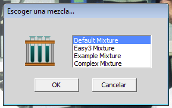

Volver al inicio
Ejercicio previo
Volver al inicio
Ejercicio previo
Ejercicio 6 de 6
Calculando el número de subunidades de una proteína oligomérica
La mezcla Example_Mixture contiene seis proteínas monoméricas con los siguientes pesos moleculares:
| proteína | Peso molecular |
|---|
| 1 | 200.000 |
| 2 | 100.000 |
| 3 | 50.000 |
| 4 | 25.000 |
| 5 | 12.500 |
| 6 | 7.400 |
¿Cuál de las resinas de Filtración por gel disponibles en el programa sería mejor utilizar para resolver las seis proteínas?

Cargar esta mezcla, ( escoger cualquiera de las proteínas,no importa cual) y someter a la filtración por gel utilizando la resina escogida. Para cada una de las seis proteínas, escriba eln número de fracción en el puntomedio de su peak de elución. Dibuje un gráfico de el número de fracción versus el logaritmo de el peso molecular de cada proteína. ¿Usted ve una línea recta? Si no, usted puede reexaminar sus datos antes de proseguir.

Ahora cargue la mezcla Default_Mixture y escoja la proteína 15. Someta a esta mezcla a filtración por gel en la misma resina que ha escogido para la mezcla previa. Identifique las fracciones que contienen la proteína 15 ensayando las fracciones por su actividad enzimática. ¿Qué fracción contiene la actividad máxima? ¿Cuál es el peso molecular de la proteína 15 nativa? Corra un gel SDS- poliacrilamida 1D de la fracción que contiene el peak de actividad de la proteína 15. Identifique la banda correspondiente a la proteína 15 por Western Blot (immuno blot). ¿Cuanto es el peso molecular de la subunidades de la proteína 15? ¿Cuántas subunidades tiene esta proteína?